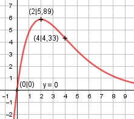

Aufgabe 141 8 * x f(x) = 8 * x * e-0,5x = ------- e0,5x Produktregel erste Ableitung: u = 8x, u' = 8 v = e-0,5x Kettenregel: v' = -0,5 * e-0,5x f'(x) = 8 * e-0,5x + (-0,5 * e-0,5x) * 8x f'(x) = e-0,5x * (8 - 4x) Produktregel zweite Ableitung: u = e-0,5x Kettenregel: u' = - 0,5 * e-0,5x v = 8 - 4x, v' = - 4 f''(x) = -0,5 * e-0,5x * (8 - 4x) + (-4) * e-0,5x f''(x) = e-0,5x * (-4 + 2x - 4) 2x - 8 f''(x) = e-0,5x * (2x - 8) = -------- e0,5x Produktregel dritte Ableitung: u = e-0,5x Kettenregel: u' = - 0,5x * e-0,5x v = 2x - 8, v' = 2 f'''(x) = (-0,5 * e-0,5x) * (2x - 8) + 2 * e-0,5x f'''(x) = e-0,5x * (-x + 4 + 2) f'''(x) = e-0,5x * (6 - x) Zur Beurteilung, ob f'''(x) ≠ 0 : (Begründung siehe Aufgabe 105) u = 2x - 8, u' = 2, v = e0,5x u' 2 f'''(x) = --- = ------- ≠ 0 für alle x v e0,5x Definitionsbereich: -∞ < x < ∞ Waagerechte Asymptote: 8x ------- geht gegen 0 für x gegen ∞ e0,5x Wertebereich: f(x) wird dann am größten, wenn x = 2 (Extrempunkt) f2 = 5,89 --> -∞ < f(x) ≤ 5,89 Symmetrie zur y-Achse bzw. zum Punkt (0|0): f(-x) = 8 * (-x) * e-0,5x = -8x * e0,5x ≠ f(x) --> keine Achsensymmetrie -f(-x) = 8x * e0,5x ≠ f(x) --> keine Punktsymmetrie Nullstellen: f(x) = 0 8x * e-0,5x = 0 |:e-0,5x 8x = 0 |:8 x = 0 N(0|0) Schnittpunkt mit der y-Achse: x = 0 f0 = 8 * 0 * -0,5 * 0 = 0 Sy(0|0) Extrempunkte: f'(x) = 0 e-0,5x * (8 - 4x) = 0 |:e-0,5x 8 - 4x = 0 | +4x 4x = 8 |:4 x = 2 f(2) = 8 * 2 * -0,5 * 2 = 5,89 f''(2) = -0,5 * 2 * (2 * 2 - 8) < 0 --> Hochpunkt (2|5,89) Wendepunkte: f''(x) = 0 e-0,5x * (2x - 8) = 0 |:e-0,5x 2x - 8 = 0 | +8 2x = 8 | :2 x = 4 f(4) = 8 * 4 * -0,5 * 4 = 4,33 f'''(4) = -0,5*4 * (6 - 4) ≠ 0 --> WP(4|4,33) Graph:
